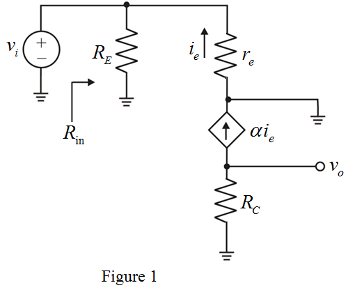
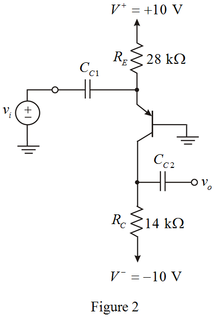

From Figure 1, the input resistance is,
Determine the value of emitter current.
Substitute  for
for  and for
and for  in the equation.
in the equation.
Refer to Figure 6.44 in the text book.
The small signal analysis using the T-model for the BJT is shown in Figure 1.

From Figure 1, the input resistance is,
Determine the value of emitter current.
Substitute for and for in the equation.
Determine the value of emitter resistance.
Substitute  for
for  and for
and for  in the equation.
in the equation.
Thus, the value of emitter resistance,  is.
is.
In Figure 6.44, the value of emitter resistance and now it is . Hence, the resistor value raised by a factor is,
Determine the new value of collector resistance.
Substitute for  in the equation.
in the equation.
Thus, the value of collector resistance,  is
is  .
.
The modified circuit of Figure 6.44 is shown in Figure 2.

Substitute for ,
,  for
for  and
and  for in the equation.
for in the equation.
Thus, the value of voltage gain of the amplifier, is .